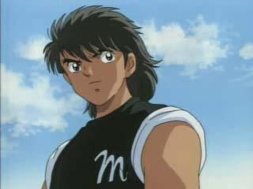

Marc Langer


Mauvais perdant (cumulable)
- Dès que vous ratez une attaque ou une défense.

- Dure jusqu'à votre prochaine attaque réussie.
«Si vous rétorquez que c'est un anti-héros et qu'il n'a rien à faire ici. Je vous dirai que... Vous avez probablement raison.»